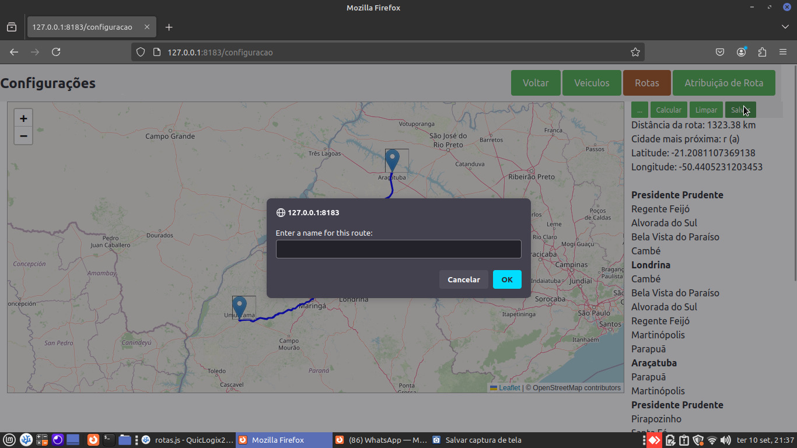
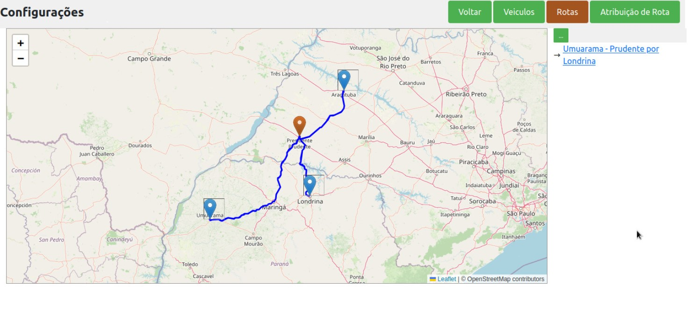

The system allows customers to choose the route that best meets their needs. With a highly efficient algorithm, the platform analyzes various variables to determine the optimal delivery order, ensuring that products reach their destination quickly and reliably. This flexibility not only provides a personalized experience but also brings significant savings on freight costs, resulting in a positive impact on the company's finances and contributing to more efficient logistics management.
After selecting the route and with the system responsible for mapping the best path, the customer gains the advantage of saving this route for future deliveries. This feature not only streamlines the logistics process but also allows the customer to reuse optimized routes, saving time and ensuring efficiency in their delivery operations.
After selecting the route and with the system responsible for mapping the best path, the customer gains the advantage of saving this route for future deliveries. The client can simply click on the saved route and proceed to send their packages, streamlining the logistics process and ensuring efficiency in their delivery operations.